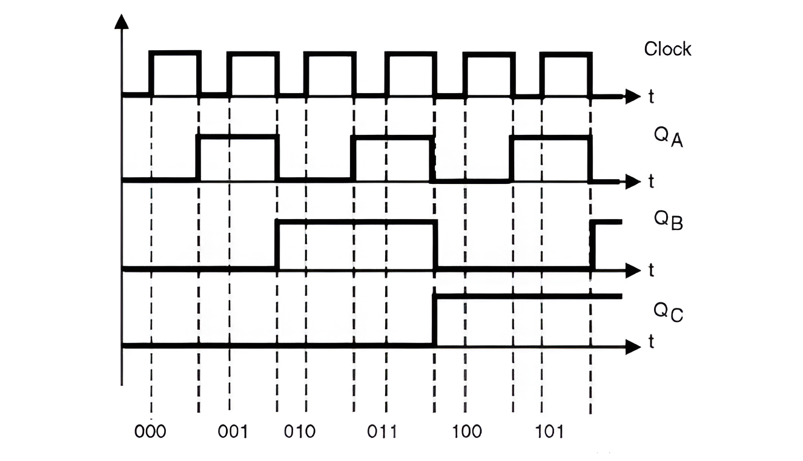
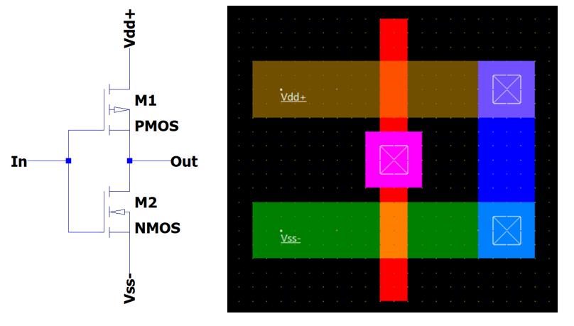
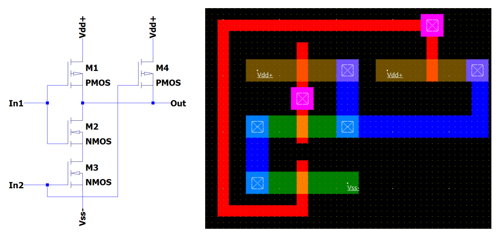
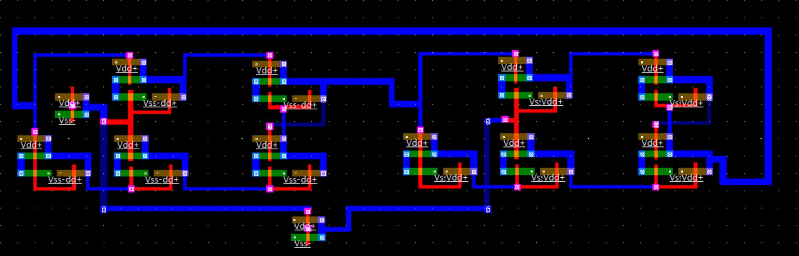

Transistor-Level Design and Post-Layout Characterization
A full-custom 3-bit synchronous CMOS counter implemented at transistor level and validated post-layout at VDD = 0.65 V.
Intrinsic gate delay does not define system frequency — sequential timing closure and clock integrity ultimately bound performance.
Propagation delays range from 90 ps to 172 ps across process corners.
full-custom CMOS
synchronous counter
VDD 0.65 V
post-layout validation
Microwind
Design Goals & Context
The architecture is a fully synchronous 3-bit up-counter with edge-aligned state transitions.
State storage uses a master-slave edge-triggered strategy to eliminate level transparency.
The design targets low-voltage operation at VDD = 0.65 V, where timing and noise margins tighten.
Validation is performed post-layout with extracted parasitic effects and process-corner awareness.

Expected synchronous counting sequence.

Full-custom CMOS inverter layout used as electrical reference.
CMOS Inverter (Reference Cell)
The inverter serves as the electrical reference cell for delay, power, and transition quality.
PMOS/NMOS geometry is tuned to compensate mobility mismatch and improve rise/fall symmetry.
At 0.65 V, transfer characteristics become highly sensitive to threshold and layout parasitics.
Extracted parasitic capacitances are tracked to keep the reference realistic for higher-level timing.
NAND Gate (Static CMOS)
Series NMOS devices introduce stack effect and increase equivalent pull-down resistance.
Diffusion sharing reduces area and interconnect length but shifts node capacitance distribution.
Charge-sharing behavior is evaluated to avoid dynamic voltage droop on internal nodes.
The cell is characterized as a representative logic stage under low-VDD switching conditions.

Static CMOS NAND gate layout with diffusion sharing.

Transistor-level master–slave D flip-flop layout.
Master–Slave D Flip-Flop
The storage element uses an edge-triggered topology to avoid level-sensitive transparency windows.
Sequential timing is evaluated through tCQ, tsetup, and thold to bound synchronous operation.
Internal dynamic nodes are treated as parasitic-sensitive points under clock activity.
Clocked transistor sizing prioritizes robust state transfer under low-voltage constraints.
Full Counter Integration
Clock routing is prioritized to limit skew and preserve edge simultaneity across flip-flops.
Critical nodes are kept compact to minimize parasitic loading and dynamic coupling.
Integration is performed with extraction-aware placement to preserve sequential timing margins.
Layout symmetry is used where possible to reduce imbalance between bit-slice paths.
Microwind post-layout extraction is used to include routing and device parasitics in simulation.
The counter is exercised under high-frequency excitation to stress timing robustness.
The expected binary sequence is preserved across cycles with no state corruption.
No metastability events are observed within the simulated operating envelope.
Timing & Power Interpretation
Measured propagation delay spans 90 ps to 172 ps across process corners. Individual gate delay does not set system fmax;
sequential closure dominates and must satisfy Tclk ≥ tCQ + tlogic + tsetup + tskew + tmargin. Power varies significantly with
process and activity corner assumptions, while dynamic behavior follows the expected V²DD dependence.
Deliverables
This page summarizes the architecture and post-layout characterization flow. The complete technical document includes
extraction setup, waveforms, corner sweeps, and full implementation evidence.